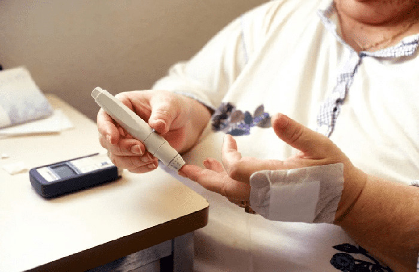
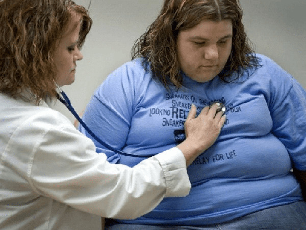
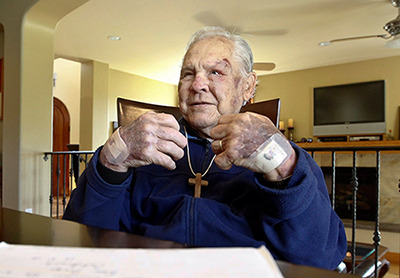

Líbí se
Líbí se to 18 889 lidem
Dobrý den! Já jsem zase s vami, Filip Musil. Kdo neví, na svém blogu hovořím o různých nemocech a moderních metodách bojování proti nim. Od dětství se zajímám o medicínu a snažím se dělat smysluplné věci pro lidstvo. Zatím nemám možnost přímo pomáhat pacientům, protože pouze studuji na lékařské fakultě. Proto jsem se rozhodl vytvořit blog, ve kterém zkušení odborníci budou sdílet kvalitní novinky, které přispívají k vašemu rychlému zotavení.
V tomto článku jsem se zabýval běžným onemocněním slinivky břišní - diabetes mellitus II. typu (inzulín rezistentní). Během rozhovoru s praktickým endokrinologem jsem se od lékaře dozvěděl o novém účinném produktu, který již pomohl tisícům našich krajanů vyrovnat se s tímto smrtelným onemocněním. Musím vám o něm hned říct!
PROSÍM VÁS PŘEČTĚTE SI POZORNĚ ROZHOVOR: nezapomínejte na příznaky cukrovky a podnikněte okamžitá opatření, abyste ochránili své zdraví a zachránili život! Díky novému produktu na českém trhu je k dispozici všem! MŮŽETE PORAZIT CUKROVKU!
Diabetes mellitus typu II je porušení metabolismu sacharidů. Tento typ diabetu je charakterizován sníženou náchylností buněk k působení inzulínu, prudkým omezením příjmu glukózy v nich. A relativní nedostatek inzulínu se může časem stát absolutním, protože onemocnění postupuje.
Hlavní rizikové faktory pro diabetes mellitus II. typu:
- Věk. Nejčastěji se onemocnění rozvíjí ve věku nad 40 let.
- Nadměrná tělesná hmotnost. U 60-90% pacientů výrazně překračuje normu.
- Sedavý životní styl.
- Genetická náklonnost. Existuje několik genů odpovědných za funkci beta buněk pankreatu. Jejich přítomnost v genomu je spojena se zvýšeným rizikem vzniku cukrovky. Faktory vnějšího prostředí mohou toto riziko zvýšit.
- Metabolický syndrom. Jedná se o kombinaci vysokého krevního tlaku, cholesterolu a triglyceridů.
Na rozdíl od diabetes mellitus typu I, diabetes mellitus typu II může být asymptomatický po dlouhou dobu. Ale podezření na porušení metabolismu uhlohydrátů je stále možné. Podle následujících ukazatelů:
- žízeň, zvýšení spotřeby tekutin na 3-5 litrů denně
- svědění kůže a sliznic
- chronická únava
- zvýšený pocit hladu
- sucho v ústech
- špatné vidění
- migréna
- zvýšení množství denní moči, včetně noci
- bezdůvodné snížení hmotnosti
V posledních letech SZO (WHO) zaznamenává významný nárůst výskytu diabetu II. typu po celém světě. V Česku jen v letech 2020- vzrostl počet lidí s diagnózou "cukrovky" oproti předchozímu období o 7%. To je katastrofálně obrovské číslo!
V mnoha ohledech je rychlý nárůst morbidity spojen s epidemií obezity a je již považován za sociální problém. Nejhorší je, že čím později je onemocnění odhaleno, tím závažnější jsou jeho následky. Některé změny v těle jsou nevratné a způsobují předčasnou nevyhnutelnou smrt. Už dnes můžete přestat být obětí cukrovky a já vám řeknu jak.
Nedávno moji kolegové dokončili test nového produktu, o kterém jsem získal poměrně značné množství pozitivních recenzí. Mluvím o přírodním komplexu . Produkt odstraňuje nepříjemné příznaky a ovlivňuje příčinu onemocnění, což přispívá k přirozené stabilizaci hladiny cukru v krvi. A kurz pomáhá posílit imunitu a zlepšit pohodu.
Protože v mé praxi je to první produkt, který se skládá výhradně z přírodních látek-rostlinných výtažků, vitamínů a stopových prvků. neobsahuje konzervační látky, chemické složky a GMO. Přírodní komplex Insulin je naprosto bezpečný. Výrobek může být užíván doma sám, protože nemá žádné vedlejší účinky.
Účinné látky přispívají k:
- odstranění nepříjemných příznaků a zlepšení obecného zdraví člověka;
- snížení inzulinové rezistence;
- normalizaci hladiny glukózy v krvi a metabolismu sacharidů;
- obnovení funkce jater a slinivky břišní;
- snížení hladiny cholesterolu.
Fáze č. 1 - normalizace hmotnosti, snížení hladiny cholesterolu v krvi
Glukomannan pomáhá kontrolovat záchvaty hladu. Přestanete po celou dobu chtít jíst, snížíte nezdravou chuť na sladké. Beta-glukany z hub "vytahují" cholesterol z potravin, čímž zabraňují jeho adsorpci do krve. To vede k přirozenému snížení hladiny cholesterolu v krvi. V důsledku toho se riziko onemocnění kardiovaskulárního systému, včetně infarktu a mrtvice, snižuje na minimum.
Fáze č. 2 - obnovení správné funkce štítné žlázy a jater
Extrakt z listů zeleného čaje pomáhá zlepšovat metabolické procesy, včetně podpory regulace metabolismu sacharidů. Také regeneruje nervová vlákna a zlepšuje krevní oběh. Tímto způsobem dochází k obnově poškozených jaterních buněk a štítné žlázy, jejich fungování se zlepšuje. Toxiny se přirozeně vylučují z těla.
Fáze č. 3 - zlepšení citlivosti buněk na inzulín, normalizace hladiny cukru v krvi
Extrakt ze skořice, vitamín C, chrom a zinek snižují hladinu cukru v krvi na normální. To je způsobeno zvýšenou citlivostí na inzulín a v důsledku toho-lepší transport glukózy z krve do buněk. Všechny orgány konečně dostanou potřebnou výživu, tělo je nabito energií-zdravotní stav se zlepšuje, ospalost zmizí, chronická únava prochází.
Fáze č. 4 - detoxikace organismu, posílení imunity
Extrakt z kůry dřišťálu obyčejného přispívá ke zvýšení ochranných vlastností těla, díky čemuž se všechny orgány a systémy rychleji obnovují. Tělo se lépe vyrovnává s jakýmkoli zatížením a je spolehlivě chráněno před škodlivými účinky.
Užívejte půl hodiny před jídlem, 25 kapek 2krát denně, předem nařeďte ve sklenici vody (200 ml). Optimální doba trvání kurzu je v průměru 4-6 týdnů, ale ne méně než 30 dní. Faktem je, že výrobek má kumulativní vlastnosti a potřebuje čas, aby se účinné látky zabudovaly do metabolismu. To zajišťuje stabilní a dlouhotrvající příznivý účinek produktu!
Již 7 měsíců předepisuji tento přírodní komplex všem svým pacientům, jsem zodpovědný za jejich život a zdraví. A proto jsem nesmírně rád, že díky u každý z nich získal skvělý výsledek. Denně slyším slova vděčnosti, ale hlavní odměnou pro mě jsou šťastné úsměvy lidí, kterým jsem pomohl!
Také radím svým pacientům, aby jedli správněji a rozmanitěji, jedli více čerstvé zeleniny a ovoce, pili více vody. Ale spotřeba živočišných tuků a snadno stravitelných sacharidů je lepší omezit. Nezapomeňte také na cvičení, procházky a další fyzické aktivity. Pohyb je život!
Vážení sledovatelé a čtenáři mého blogu, doufám, že můj článek byl pro vás užitečný a budete poslouchat doporučení zkušeného lékaře a projevíte péči o své zdraví a zdraví blízcích.
Diabetes je noční můrou našich dnů, téměř každý 6 lidí je obeznámen s touto chorobou... může výrazně změnit tuto smutnou statistiku. Řekněte nám o produktu svým příbuzným a přátelům, a pak v příštích letech se počet zotavených lidí zvýší mnohonásobně a počet pacientů s diagnózou "diabetes", naopak - sníží na polovinu, nebo dokonce více! Nezapomeňte: vaše zdraví je ve vašich rukou!
Mám pro vás skvělou zprávu! Doktor Václav Vlček se dohodl s výrobcem na exkluzivních podmínkách pořízení u pro všechny sledovatele a čtenáře mého blogu. Jen do konce dne si můžete objednat produkt se slevou 50%! Na mé paměti výrobce poprvé dělá takový štědrý dárek. Nemohl jsem se nezeptat " proč?”. Ukázalo se, že není obeznámen s touto chorobou z první ruky, jeho matka zemřela na cukrovku a to ho přimělo k vývoji inovativního produktu , který by mohl zachránit životy milionů lidí. Obrovský respekt a vděčnost!
Již zítra se cena u vrátí ke standardní (vyšší než 2krát).